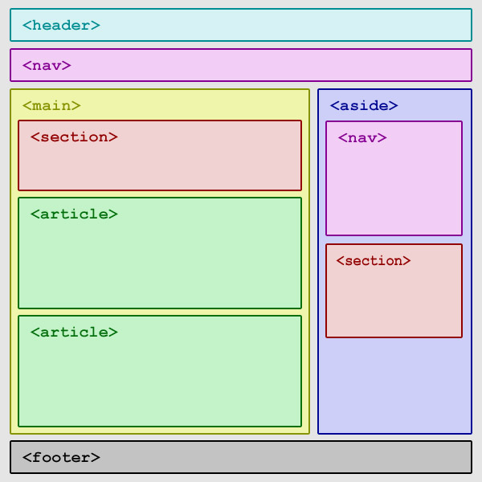

Lista znaczników
- znacznik dołączenia obrazu"<img src="adres" title="tytul wyswietlany po najechaniu myszką" alt="tekst alternatywny">"
- sekcja nagłówka"<header>"
- zbiór odnośników, menu,belka nawigacyjna"<nav>"
- sekcje strony"<section>"
- znacznik tresci, artykuł"<article>"
- panel boczny, boczne menu"<aside>"
- stopka strona, stópeczka"<footer>"
- cześć główna "<main> i </main>"
- lista wypunkowana "<ol> i </ol>"
- lista nieuporządkowana "<ul> i </ul>"
- element listy "<li> i </li>"
- typy listy numerownej:
type="1" - lista z cyframi arabskimi (domyślna)
type="A" - lista z wielkimi literami
type="a" - lista z małymi literami
type="I" - lista z cyframi dużymi rzymskimi
type="i" - lista z cyframi małymi rzymskimi
-
Tabele
- znacznik tabeli "<table> i </table>"
- znacznik wiersza "<tr> i </tr>"
- znacznik pola "<td> i </td>"
- znacznik nagłówka tabeli "<thead> i </thead>"
- znacznik ciała tabeli "<tbody> i </tbody>"
- znacznik nagłówek komórka "<th> i </th>"
- określenie zasięgu nagłówka scope="col" - kolumna, scope="row" - wiersz "<th scope="row">"
- łączenie komórek w poziomie (kolumnami) colspan="ilość" "<td colspan="3">"
- łączenie komórek w pionie (wierszami) rowspan="ilosc" "<td rowspan="3">"
-
"<input> i </input>" - znacznik do wprowadzania danych w zależności od określonego typu
Atrybuty:
name="" - określa nazwę pola i nazwę zmiennej, do której zostanie wprowadzona wartość z formularza.
value="" - określa domyślną wartość pola
size="" - określa liczbę znaków mieszczących się w widocznym polu
maxlenght="" - określa maksymalną liczbę znaków, jaką możemy wpisać do pola
type=""- typ pola input
Typy pól input
- "text" - pozwala na wprowadzenie tekstu
- "number" - pozwala na wprowadzanie tylko liczb
- "chceckbox" - pole do zaznczenia opcji
- "radio" - pole wyboru opcji
- "password" - pole do wpisywania hasła - ukrywa znaki
- "submit" - przycisk do zatwierdzenia i przesłania danych z formularza
- "reset" - pole do wyczyszczenia danych z formularza
- "file" - dołączenie pliku do formularza
- "hidden" - ukryte pole, nie wyświetla się na formularzu ale przesyła dane z formularze
- "button" - przycisk w formularzu, wywołujący jakąś funkcje
- "color" - pole do wybrania koloru z palety
- "email" - pole do wpisanai emaila - sprawdza poprawną składnie adresu
- "date" - pozwala wpisać lub wybrać datę z kalendarza
Struktura bloków html5
